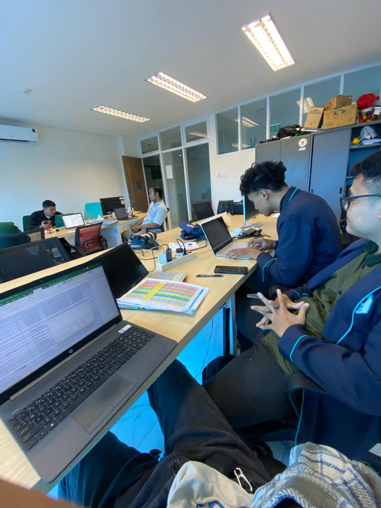
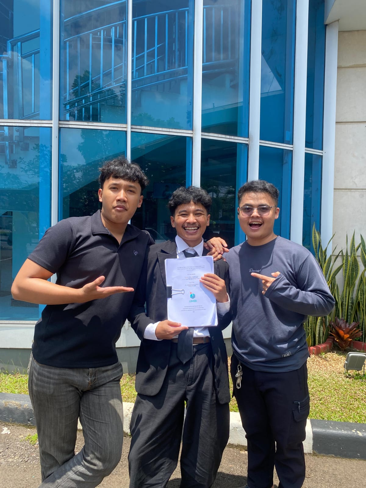
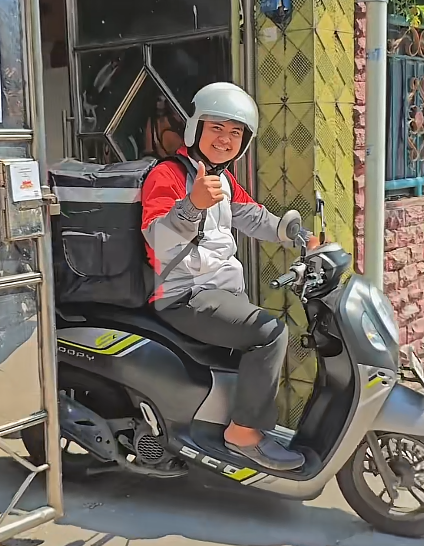
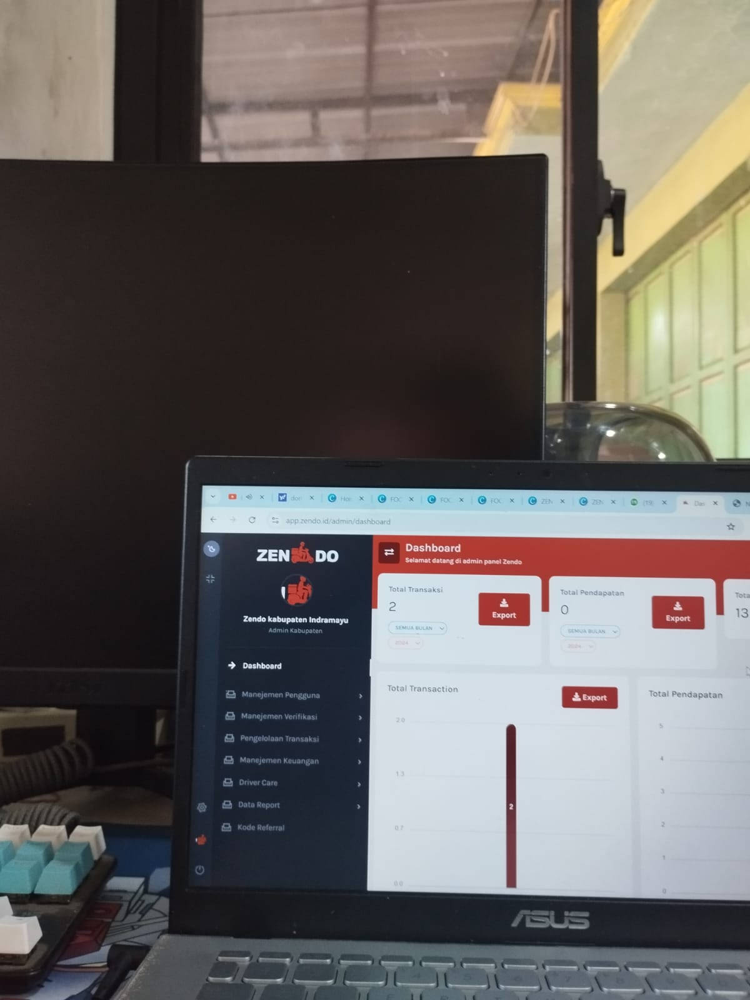
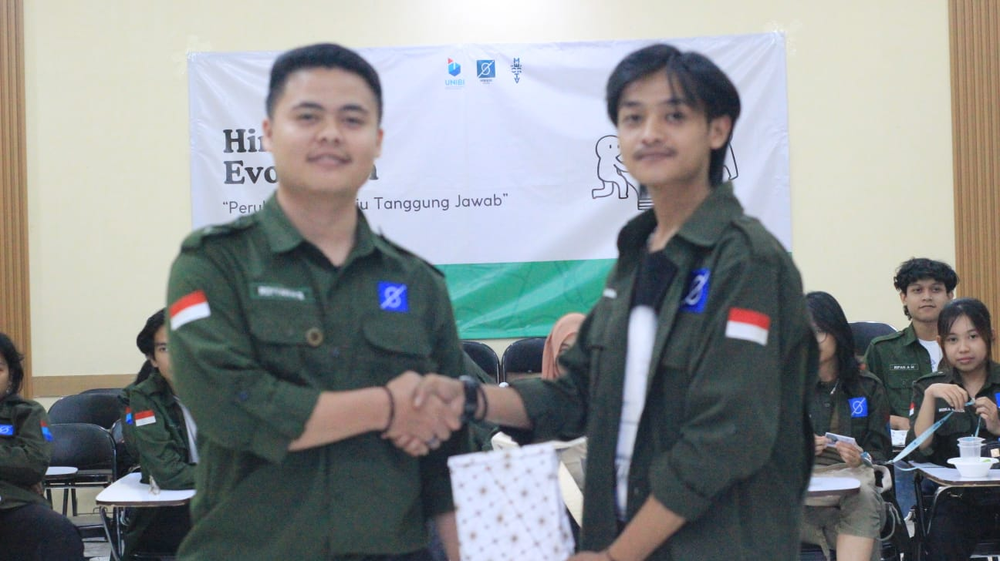
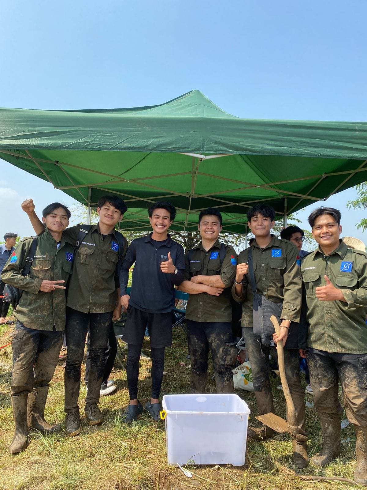
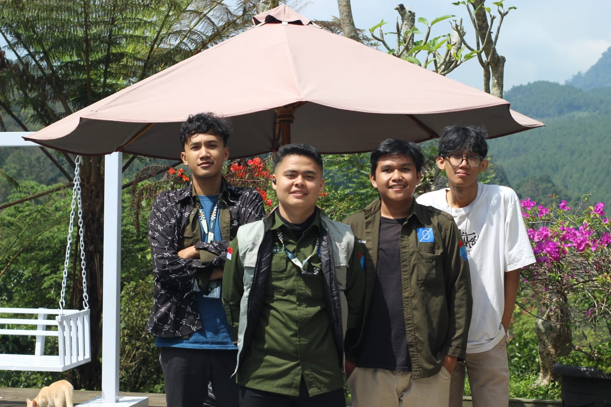
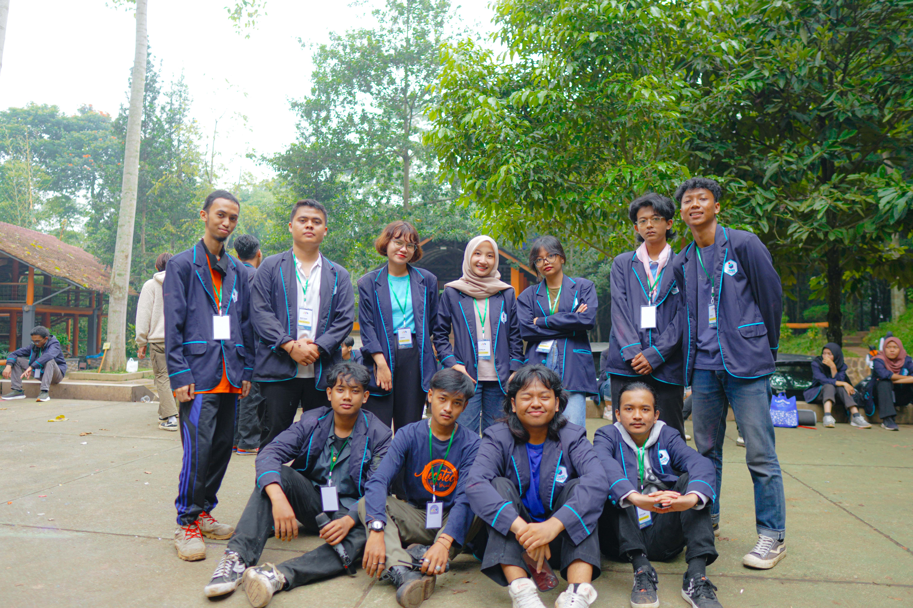
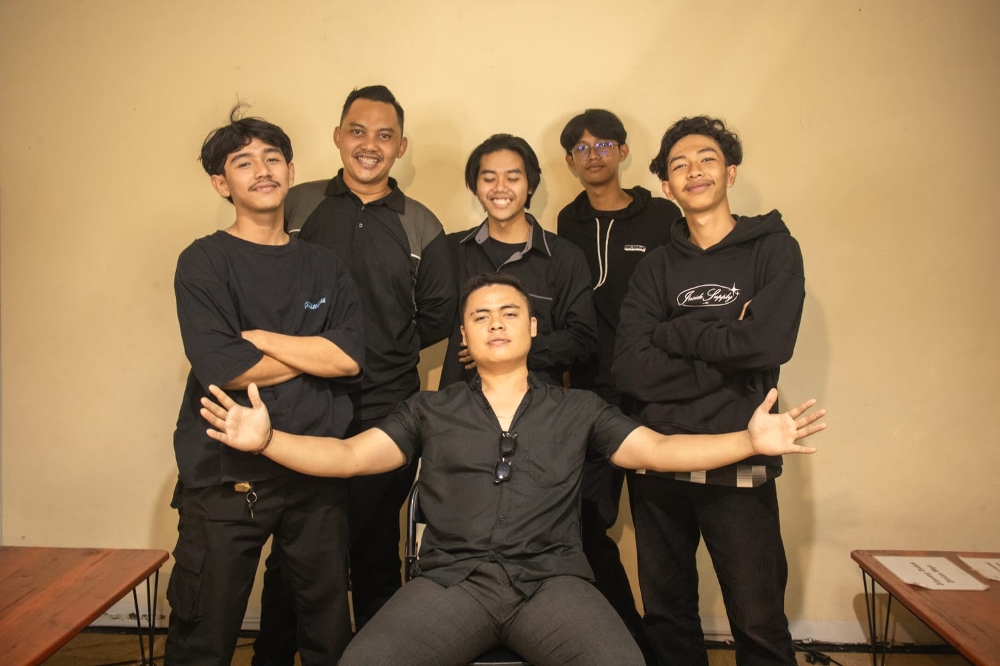

Royyan Hadi Saputra
Information Systems Graduate
Data Analyst & Data Entry
Saya adalah Lulusan Program Studi Sistem Informasi, Universitas Informatika dan Bisnis Indonesia, memiliki minat pada bidang Data Analyst dan Data Entry. Memiliki pengalaman dalam pengolahan dan pembaruan data melalui Kerja Praktik di Dinas Ketenagakerjaan Kota Bandung serta proyek analisis sentimen. Menguasai Microsoft Excel dan memiliki pemahaman dasar SQL dan Python untuk mengolah, menganalisis, dan menyajikan data.
Data Accuracy First
Mengutamakan ketelitian dan keakuratan dalam setiap pengolahan data.
Analytical Thinking
Menggunakan pola dan informasi dari data untuk menghasilkan insight yang relevan.
Continuous Learning
Mengembangkan kemampuan penggunaan tools dan teknologi yang mendukung pekerjaan di bidang data.
Universitas Informatika dan Bisnis Indonesia
S1 Sistem Informasi (Faculty of Technology and Informatics)
"Analisis Sentimen Pengguna Aplikasi Sapawarga Pada Layanan Ulasan Google Play Store Menggunakan IndoBERT dan XGBoost"
Mengembangkan model klasifikasi sentimen berbasis IndoBERT dan XGBoost dengan 3.270 ulasan Sapawarga, akurasi terbaik 95.21%.
Dinas Ketenagakerjaan Kota Bandung (Magang)
Bertanggung jawab atas pengumpulan, pengolahan, dan pembaruan data peserta pelatihan kerja guna memastikan akurasi data. Selain itu, berkolaborasi aktif dengan staf administrasi serta mengolah kebutuhan untuk pelaporan.


Zein Delivery Order (Kerja)
Mengelola operasional harian Zendo dengan menangani administrasi data pesanan sekaligus turun langsung sebagai driver untuk memastikan pengiriman berjalan tepat waktu.


Organisasi
Mengoordinasi kegiatan pengabdian masyarakat sebagai ketua divisi, memimpin pelaksanaan program kerja organisasi, serta aktif menjadi relawan dalam berbagai aksi sosial.






CV - Royyan Hadi Saputra
CV Terbaru · ATS Friendly
Curriculum Vitae (PDF) Lihat LinkedIn Profile